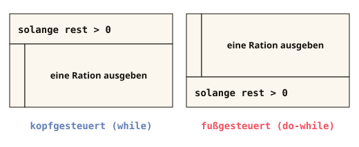

Vorsicht, Endlosschleife: Wird die Bedingung nie false (etwa weil
i++ fehlt), läuft die Schleife ewig. Dann hilft nur die Stopp-Taste deiner IDE.
Passiert allen, einmal pro Woche.
Kapitel 7 von 11 · while, do-while, for
Schleifen
Niemand schreibt hundertmal dieselbe Zeile. Dafür gibt es Schleifen, und drei Arten, sie zu bauen.
DAS PROBLEM
Das Programm soll von 1 bis 10 zählen. Wie viele Zeilen braucht das?
Zaehlen.java
System.out.println(1);
System.out.println(2);
System.out.println(3);
// und so weiter: noch sieben Zeilen bis 10
KONSOLE
Drei Zeilen für drei Zahlen. Bis 10 wären es zehn Zeilen, bis 1000 tausend.
Zaehlen.java
for (int i = 1; i <= 10; i++) {
System.out.println(i);
}
KONSOLE
Drei Zeilen, egal ob bis 10 oder bis 1000: Du änderst nur die Zahl in der Bedingung. Wie Schleifen funktionieren, zeigt dieses Kapitel.
Danach kannst du
- die drei Schleifen unterscheiden:
while,do-whileundfor - eine Endlosschleife erkennen, bevor sie dein Programm aufhängt
- eine for-Schleife Schritt für Schritt im Kopf ausführen
- erklären, wann eine Schleife gar nicht läuft und wann genau einmal
- eine Wiederholung als Struktogramm zeichnen
- eine Schleife in eine Schleife setzen und sagen, wie oft der innere Rumpf läuft
- mit
breakundcontinueaus einer Runde oder aus der ganzen Schleife aussteigen
7.1 Kopfgesteuerte Schleife: while
Eine Schleife wiederholt einen Block, statt ihn hundertmal hinzuschreiben. while heißt „solange“: Der Block läuft wieder und wieder, solange die Bedingung true ist.
AUFBAU · KLICK AUF EINEN TEIL
while (Bedingung) {
Anweisungen, die wiederholt werden
}Der Block in den geschweiften Klammern heißt Rumpf. Die Bedingung wird vor jeder Runde geprüft, wie beim if: Sie ergibt true oder false.
while heißt „solange“ und leitet die Schleife ein. Hinter die runde Klammer kommt kein Semikolon: Bei while (i < 5); ist der Rumpf leer, und der Block darunter gehört nicht mehr zur Schleife.Bedingung: ein Vergleich wie
battery < 100 oder eine boolean-Variable. Prüfst du auf Gleichheit, schreib ==, nicht =.Die geschweiften Klammern markieren Anfang und Ende des Rumpfs. Ergibt die Bedingung
false, geht es mit der ersten Zeile hinter der schließenden Klammer weiter.Schleifenrumpf: die Anweisungen für eine Runde, etwa
charge();. Mindestens eine davon muss eine Variable aus der Bedingung verändern, etwa mit i++. Sonst ergibt die Bedingung nie false, und die Schleife läuft endlos.DieDreiSchleifen.java (1 von 3)
// while, "SOLANGE Bedingung: wiederhole" (prüft VORHER)
while (battery < 100) {
charge();
}ZEILE FÜR ZEILE
while (battery < 100) | prüft vor jeder Runde, ob der Akku noch nicht voll ist. Ist das true, läuft der Rumpf. |
charge(); | der Rumpf. Danach geht es zurück nach oben zur Prüfung. Damit die Schleife je endet, muss charge() den Wert von battery erhöhen. |
} | Ist die Bedingung false, geht es hinter dieser Klammer weiter. |
Merk dir das
Etwas im Rumpf muss die Bedingung Richtung false bewegen, sonst läuft die Schleife ewig.

Erst ein Puzzle: Der Countdown ist durcheinandergeraten.
Code-Puzzle: Sortiere die Zeilen so, dass das Programm 3, 2, 1 und dann „Start!“ ausgibt. Denk dran: Was muss VOR der Schleife existieren? Was muss IN ihr passieren, damit sie endet?
int rakete = 3;
while (rakete > 0) {
System.out.println(rakete);
rakete = rakete - 1;
}
System.out.println("Start!");
7.2 Zählschleife: for
Steht vorher fest, wie oft etwas laufen soll, ist for die passende Schleife. Alles Organisatorische steht in einer Zeile: wo der Zähler startet, wie lange es weitergeht und was nach jeder Runde passiert.
AUFBAU · KLICK AUF EINEN TEIL
for (Start; Bedingung; Schritt) {
Anweisungen, die wiederholt werden
}Die drei Teile in der Klammer trennt ein Semikolon. Der Start läuft einmal, die Bedingung wird vor jeder Runde geprüft, der Schritt nach jeder Runde ausgeführt.
for leitet die Zählschleife ein. In der runden Klammer dahinter steht alles, was den Zähler steuert. Wie bei while kommt hinter die schließende runde Klammer kein Semikolon.Start: deklariert den Zähler und gibt ihm seinen Anfangswert, etwa
int i = 0. Der Zähler gilt nur in der Schleife, hinter ihrer schließenden Klammer gibt es ihn nicht mehr.Die zwei Semikolons trennen Start, Bedingung und Schritt voneinander. Hinter dem Schritt steht keins:
for (int i = 0; i < 3; i++;) meldet der Compiler als Fehler.Bedingung: meist ein Vergleich mit dem Zähler, etwa
i < 3. Achte auf < oder <=: Mit Start 0 ergibt i < 3 drei Runden, i <= 3 vier.Schritt: verändert den Zähler, meist mit
i++, also um 1 erhöhen. Er muss den Zähler so verändern, dass die Bedingung irgendwann false ergibt, sonst läuft die Schleife endlos.Die geschweiften Klammern markieren Anfang und Ende des Rumpfs. Ergibt die Bedingung
false, geht es mit der ersten Zeile hinter der schließenden Klammer weiter.Schleifenrumpf: die Anweisungen für eine Runde. Hier kannst du den aktuellen Wert des Zählers benutzen, etwa
System.out.println("Round " + i);.DieDreiSchleifen.java (2 von 3)
// for, die Zählschleife: alles Organisatorische in einer Zeile
for (int i = 0; i < 3; i++) {
System.out.println("Round " + i);
}ZEILE FÜR ZEILE
int i = 0 | Start: legt den Zähler i an und setzt ihn auf 0. Läuft genau einmal, vor der ersten Runde. Das „ab 0 zählen“ wird in Kapitel 8 wichtig. |
i < 3 | Weitermachen, solange? Vor jeder Runde geprüft. Bei false ist Schluss. |
i++ | Nach jeder Runde: i um 1 erhöhen. |
System.out.println("Round " + i); | der Rumpf, jedes Mal mit dem aktuellen Wert von i. |
SCHREIBTISCHTEST · RUNDE FÜR RUNDE
i | i < 3 ? | was passiert |
0 | true | Ausgabe „Round 0“, dann macht i++ aus 0 eine 1 |
1 | true | Ausgabe „Round 1“, dann wird i zu 2 |
2 | true | Ausgabe „Round 2“, dann wird i zu 3 |
3 | false | Schluss: Die Schleife ist nach 3 Runden fertig, weiter geht es hinter der schließenden Klammer |
Noch klarer wird es im Stepper unten.
Merk dir das
Das i aus der for-Zeile gilt nur in der Schleife, hinter der schließenden
Klammer is es weg (Kapitel 4). Was die Schleife
überleben soll (Summe, Zähler, Merker), deklarierst du deshalb davor.
Und jetzt Code lesen, die Königsdisziplin. Was gibt diese Schleife aus?
Summe.java (Ausschnitt)
int sum = 0;
for (int i = 1; i <= 3; i++) {
sum = sum + i;
}
System.out.println(sum); // println steht NACH der Schleife!
KONSOLE
Zum Schluss Schleife und if zusammen: das Klatschspiel aus der Grundschule
in Java (mit % aus Kapitel 3):
Klatschspiel.java (Ausschnitt)
for (int i = 1; i <= 10; i++) {
if (i % 3 == 0) { // Rest 0 beim Teilen durch 3?
System.out.println(i + " CLAP! ");
} else {
System.out.println(i);
}
}
KONSOLE
7.3 Fußgesteuerte Schleife: do-while
Manchmal muss der Rumpf laufen, bevor es überhaupt etwas zu prüfen gibt: Ob eine PIN falsch ist, weiß man erst, wenn sie eingegeben wurde. do-while stellt die Prüfung deshalb ans Ende.
AUFBAU · KLICK AUF EINEN TEIL
do {
Anweisungen, die wiederholt werden
} while (Bedingung);Hinter der Bedingung steht ein Semikolon. Geprüft wird erst nach dem Rumpf, also läuft er mindestens einmal.
do heißt „mache“ und leitet die Schleife ein. Hier wird nichts geprüft, das Programm geht direkt in den Rumpf.Die geschweiften Klammern markieren Anfang und Ende des Rumpfs. Direkt hinter der schließenden Klammer folgt die Prüfung mit
while.Schleifenrumpf: die Anweisungen für eine Runde, etwa
enterPin();. Auch hier muss etwas im Rumpf dafür sorgen, dass die Bedingung irgendwann false ergibt.while leitet hier die Prüfung am Ende ein. Es ist dasselbe Schlüsselwort wie bei der while-Schleife, nur steht es hinter dem Rumpf statt davor.Bedingung: etwa
pinWrong. Ergibt sie true, beginnt die nächste Runde wieder bei do. Bei false geht es mit der Zeile darunter weiter.Das Semikolon schließt die do-while-Schleife ab. Fehlt es, meldet der Compiler
';' expected. Bei der while-Schleife steht hinter der Bedingung dagegen keins.DieDreiSchleifen.java (3 von 3)
// do-while, "mach ERST, prüf DANACH" (läuft mindestens 1x)
do {
enterPin();
} while (pinWrong);ZEILE FÜR ZEILE
do { | steigt ohne Prüfung in den Rumpf ein. |
enterPin(); | der Rumpf: Die erste Eingabe kommt auf jeden Fall. |
} while (pinWrong); | erst jetzt die Prüfung. Ist die PIN falsch, geht es zurück zu do, sonst weiter unter dieser Zeile. |
Zwei fast identische Schleifen. Einziger Unterschied: Die Bedingung wird vor oder nach dem Rumpf geprüft. Macht das was aus?
Erst festlegen: hasTicket ist false. Was gibt der while-Block (Variante A) aus?
Festgelegt! Jetzt führ beide Blöcke aus und vergleiche.
Variante A: while
boolean hasTicket = false;
while (hasTicket) {
rideOneStop();
}Variante B: do-while
boolean hasTicket = false;
do {
rideOneStop();
} while (hasTicket);Auflösung: erst beide ausführen, dann aufklappen!
Ohne Ticket fährt A keine Station, B genau eine.
- while prüft vor dem Rumpf:
hasTicketist von Anfang anfalse, also läuft der Rumpf null-mal. - do-while prüft erst nach dem Rumpf:
rideOneStop()läuft einmal, erst danach ergibt die Prüfungfalse.
Merk dir das
while prüft vorher, läuft also vielleicht nie. do-while prüft nachher, läuft mindestens einmal.
Nochmal anders erklärt: die drei Schleifen im Vergleichoptional
- while prüft vor dem Rumpf (kopfgesteuert). Ergibt die Bedingung gleich beim ersten Mal
false, läuft der Rumpf null-mal. - do-while prüft nach dem Rumpf (fußgesteuert). Der Rumpf läuft immer mindestens einmal, etwa bei einer PIN-Eingabe.
- for prüft ebenfalls vor jeder Runde. Start, Bedingung und Schritt stehen in einer Zeile: die Zählschleife.
Faustregel: Anzahl bekannt → for. Anzahl unknown → while. „Erst machen, dann prüfen“ → do-while (am seltensten).
7.4 Wiederholung im Struktogramm
Drei Grundformen kennst du aus Kapitel 6, die vierte ist die Wiederholung. Sie bekommt
einen L-förmigen Rahmen: Der Balken mit der Bedingung und ein schmaler
Streifen an der Seite umfassen den Rumpf. Ob while oder do-while,
sieht man sofort: Der Bedingungsbalken sitzt oben oder unten.

Links steht die Bedingung über dem Rumpf: zuerst geprüft, im Zweifel läuft er nie (kopfgesteuert). Rechts steht sie unter dem Rumpf: Er läuft mindestens einmal (fußgesteuert). Das ist der Unterschied zwischen Variante A und B aus dem Ticket-Beispiel, nur gezeichnet.
Merk dir das
Vier Grundformen reichen für jedes Programm: Sequenz, Verzweigung, Mehrfachauswahl, Wiederholung.
Erst du, dann Java
Zeichne den Countdown aus dem Code-Puzzle oben als Struktogramm. Welche Grundform steckt drin, und was steht im Bedingungsbalken?
7.5 Verschachtelte Schleifen
Im Rumpf einer Schleife darf alles stehen, also auch eine zweite Schleife. Die äußere zählt dann die Zeilen, die innere, was in einer Zeile passiert.
AUFBAU · KLICK AUF EINEN TEIL
for (äußerer Start; Bedingung; Schritt) {
for (innerer Start; Bedingung; Schritt) {
Anweisungen für einen Eintrag der Zeile
}
Anweisungen am Ende der Zeile
}Pro Durchlauf der äußeren läuft die innere komplett durch.
Die äußere Schleife reicht vom ersten
for bis zur letzten schließenden Klammer. Eine Runde der äußeren ergibt eine Zeile, im Einmaleins zählt row von 1 bis 3.Die innere Schleife steht im Rumpf der äußeren. Sie zählt die Einträge einer Zeile, im Einmaleins
column von 1 bis 4.Äußerer und innerer Start: Der äußere läuft genau einmal, der innere in jeder Runde der äußeren neu. Der innere Zähler beginnt also in jeder Zeile wieder von vorn. Die beiden Zähler brauchen verschiedene Namen, etwa
row und column.Bedingung: Jede Schleife hat ihre eigene, etwa
row <= 3 außen und column <= 4 innen. Die innere Bedingung darf auch den Zähler der äußeren benutzen, dann ist jede Zeile unterschiedlich lang.Schritt: verändert den Zähler der eigenen Schleife, also
row++ außen und column++ innen. Ein häufiger Fehler ist row++ in der inneren Schleife: Dann ändert sich column nie, und die innere Schleife läuft endlos.Anweisungen für einen Eintrag: der Rumpf der inneren Schleife, etwa
line = line + (row * column) + " ";. Hier kannst du beide Zähler benutzen, den äußeren und den inneren.Anweisungen am Ende der Zeile: Sie stehen hinter der inneren Schleife, aber noch in der äußeren, und laufen deshalb einmal je Zeile. Ein Beispiel ist die Ausgabe der fertigen Zeile mit
System.out.println(line.trim());.TimesTable.java
public class TimesTable {
public static void main(String[] args) {
for (int row = 1; row <= 3; row++) {
String line = "";
for (int column = 1; column <= 4; column++) {
line = line + (row * column) + " ";
}
System.out.println(line.trim());
}
}
}
KONSOLE
ZEILE FÜR ZEILE
for (int row = 1; row <= 3; row++) | die äußere Schleife: drei Runden, eine je Ausgabezeile. |
String line = ""; | steht in der äußeren Schleife: Jede Reihe beginnt mit einem leeren Text. |
for (int column = 1; column <= 4; column++) | die innere Schleife: läuft in jeder Runde der äußeren viermal. |
line = line + (row * column) + " "; | hängt das Produkt und ein Leerzeichen an. In Reihe 2 wächst line so bis „2 4 6 8 “. |
System.out.println(line.trim()); | steht hinter der inneren, aber noch in der äußeren Schleife: einmal je Reihe. trim() schneidet das letzte Leerzeichen ab. |
Die Zähler heißen absichtlich row und column, nicht i
und j. Bei zwei Schleifen ineinander entscheidet ein sprechender Name zwischen
„lesbar“ und „raten“.
Merk dir das
Die Runden multiplizieren sich: 3 außen mal 4 innen sind twelve Durchläufe des inneren Rumpfs, nicht sieben. Bei je 1000 Einträgen sind es eine Million Schritte, und das merkt man.
7.6 Sprunganweisungen: break und continue
Manchmal will man nicht bis zum Ende zählen: Das Gesuchte ist gefunden, oder eine Runde soll ausfallen. Dafür gibt es zwei Wörter.
AUFBAU · KLICK AUF EINEN TEIL
break; Schleife sofort verlassen
continue; diese Runde überspringenNach break geht es hinter der schließenden Klammer der Schleife weiter, nach continue mit der nächsten Runde. Beide stehen im Rumpf, meist in einem if.
break beendet die ganze Schleife, auch wenn ihre Bedingung noch true ergibt. In verschachtelten Schleifen betrifft es nur die innerste, in der es steht. Typisch ist break nach einem Treffer: if (number == searchValue) { break; }continue überspringt den Rest des Rumpfs. In einer for-Schleife folgt danach der Schritt, etwa i++, dann die Prüfung. Vorsicht in einer while-Schleife: Steht das i++ hinter dem continue, wird es übersprungen, und die Schleife läuft endlos.Das Semikolon:
break und continue sind eigene Anweisungen und enden wie jede Anweisung mit ;. Steht dahinter im selben Block noch eine Anweisung, meldet der Compiler unreachable statement, denn sie könnte nie laufen.EmergencyExit.java
public class EmergencyExit {
public static void main(String[] args) {
for (int i = 1; i <= 6; i++) {
if (i == 3) {
continue;
}
if (i == 5) {
break;
}
System.out.println(i);
}
}
}
KONSOLE
SCHREIBTISCHTEST · RUNDE FÜR RUNDE
i | i == 3 ? | i == 5 ? | Ausgabe |
1 | false | false | 1 |
2 | false | false | 2 |
3 | true: continue | nicht mehr geprüft | keine: continue überspringt den Rest dieser Runde, weiter mit i++ |
4 | false | false | 4 |
5 | false | true: break | keine: break beendet die ganze Schleife, die 6 wird nie geprüft |
Merk dir das
breakheißt „hier raus“,continueheißt „diese Runde überspringen“.- In verschachtelten Schleifen wirkt
breaknur auf die innerste Schleife, in der es steht.

Beides sparsam benutzen: Steht die Abbruchbedingung oben in der Klammer, liest man die
Schleife in einem Zug. Faustregel: break, wenn du das Gesuchte gefunden hast,
sonst lieber die Bedingung anpassen.
Das reicht für jetzt
whileprüft vorher, läuft also vielleicht nie.do-whileprüft nachher, läuft mindestens einmal.forzählt: Start / Bedingung / Schritt in einer Zeile. Anzahl bekannt:for. Unbekannt:while.- Etwas im Rumpf muss die Bedingung Richtung
falsebewegen, sonst läuft die Schleife ewig. - Das
iaus der for-Zeile gilt nur in der Schleife. Summen und Zähler davor deklarieren. - Struktogramm: L-Rahmen, Bedingungsbalken oben (
while) oder unten (do-while). - Verschachtelt multiplizieren sich die Runden.
breakverlässt die Schleife,continueüberspringt eine Runde.
Checkpoint
1. Was gehört in die Klammern eines if?
Die Bedingung is immer ein boolean-Ausdruck: Vergleiche, verknüpft mit &&, ||, !.
2. Welche Schleife läuft garantiert mindestens einmal?
do-while prüft die Bedingung erst NACH dem ersten Durchlauf. Der Rumpf läuft also immer mindestens einmal.
3. Wie oft druckt diese Schleife? for (int i = 0; i < 4; i++) { System.out.println(i); }
i startet bei 0 und läuft, solange i < 4: also 0, 1, 2, 3. Bei i = 4 is die Bedingung false, Schluss. Das „ab 0 zählen“ wird in Kapitel 8 wichtig.
4. Was ist der Unterschied zwischen = und ==?
= speichert einen Wert in der Variable, == prüft, ob zwei Werte gleich sind. Die Verwechslung ist DER Klassiker.
5. Wann ist (age >= 18 && hasTicket) wahr?
&& = UND: beide Bedingungen müssen true sein. Für „eins reicht“ gäbe es || (ODER).
6. input is ein String mit Inhalt "yes". Wie prüfst du das correct?
Texte (und alle Objekte) vergleicht man mit .equals(), das prüft den INHALT. == prüft nur, ob es dasselbe Objekt ist.